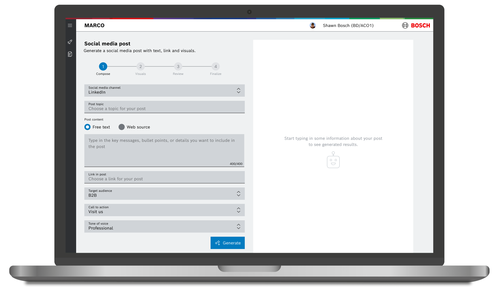
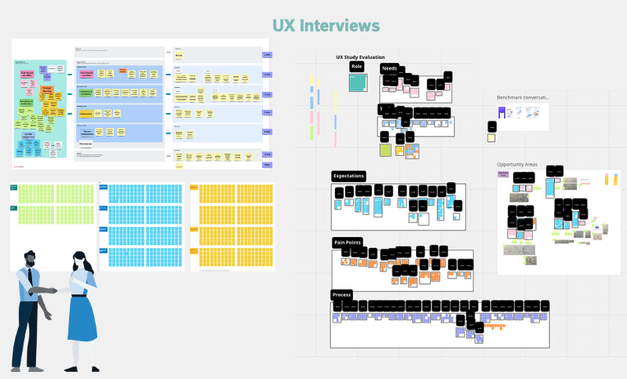
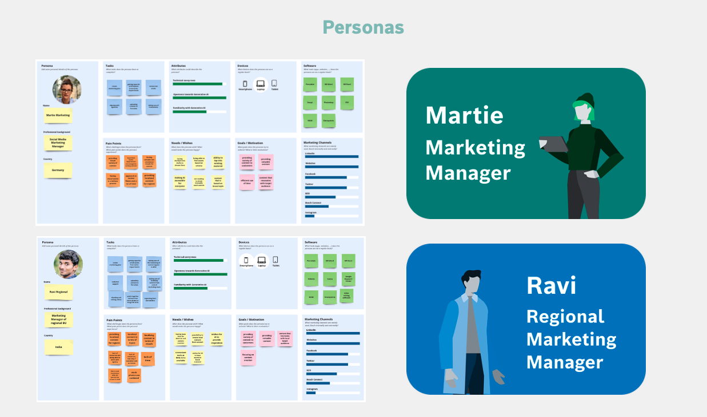
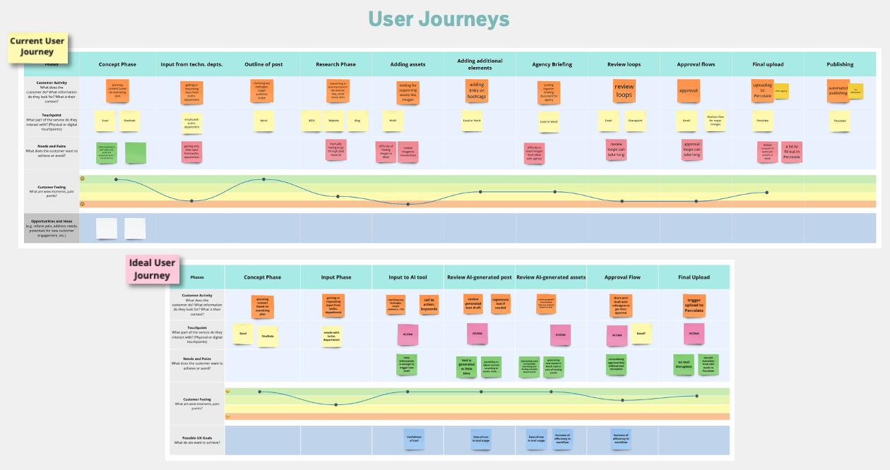
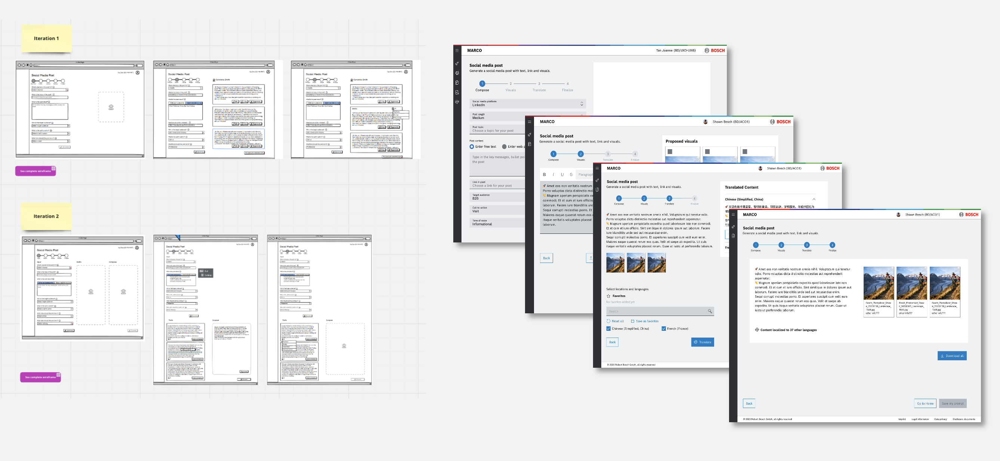
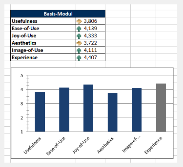

Overview
MARCO is an internal GenAI-powered tool that helps Bosch marketers create, translate, and finalise social media content across multiple languages and platforms. Built when GenAI was brand new to most users, it was designed around one belief: don't ask users to think like an AI — ask them what they already know.
The project ran for 6 months, from innovation concept through to pilot launch.

Team & Scope
I was the UX Designer on this project, partnering with a dedicated UX Researcher, a Product Manager, and an engineering team. We used Next AI to accelerate the analysis of interview research.
Problem Context
Bosch manages hundreds of digital applications across global markets, each requiring localised content — creating significant demand on small marketing teams. Marketing teams were producing localised content manually across Word, Excel, Canva, and external agencies, with every piece requiring multiple handoffs before publication. The process was slow, fragmented, and expensive.
With GenAI emerging as a potential solution, the opportunity was clear. But early testing revealed an unexpected barrier: users didn't know how to write prompts. GenAI felt unfamiliar and uncertain, and a blank prompt box created anxiety rather than possibility. The real design challenge wasn't the AI, it was the moment of first contact.
Research & Discovery

We interviewed 12 marketers and content editors across Bosch business units, using Next AI to accelerate synthesis and pattern identification.
Two personas emerged: a Marketing Manager coordinating regional content, and a Regional Marketing Manager localising for local markets. Both were juggling fragmented tools and costly agency dependencies.

Key insights:
- Consistent, on-brand content across regions was the core need
- Translation and localisation were the biggest pain points
- Users wanted to save time and money — but didn't want to learn prompt engineering to do it
Journey mapping made the fragmentation visible: a single post required crossing multiple tools, teams, and approval loops. The opportunity wasn't automating one step, it was eliminating the fragmentation entirely.

Design Approach
Replace the open prompt with a structured guided form.
The form asked users what they already knew: platform, audience, message, tone. Those inputs were converted into a prompt behind the scenes. Users never had to write a single prompt.
This became the 4-step flow: Compose → Visuals → Translate → Finalise — each step using progressive disclosure to keep complexity out of sight until relevant. Two iteration rounds moved the design from wireframes to working prototype, incorporating stakeholder and user feedback throughout.

Outcome & Impact
Usability testing with the target user group validated the approach. Users rated the experience highly — Joy-of-Use 4.3, Ease-of-Use 4.1, and overall Experience 4.4 out of 5.

MARCO launched as an internal pilot, successfully validating the form-based GenAI approach. As an innovation project, it was subsequently merged into a broader product initiative — a common path for early-stage concepts that prove their value.
The design and research provided a strong foundation for the next team to build on.
💭 Reflection
Users weren't resistant to GenAI. They were resistant to uncertainty. Replacing the blank prompt with a familiar form wasn't dumbing it down, it was meeting users where they actually were. The form gave them confidence. The confidence gave them results. The results built trust.
That shift from anxiety to agency, is what good AI UX looks like in its earliest phase.
The hardest part of designing AI products isn't the AI — it's the first three seconds.